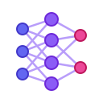

01
NeuroDetect — Brain Tumor Classification
An AI-powered brain tumor classification project using InceptionV3 and CBAM to analyze MRI images and improve feature extraction for medical image classification.
B.Tech Computer Science Engineering — Artificial Intelligence & Machine Learning
Vishwakarma Institute of Technology, Pune • 2024–2028
Computer Science Engineering student specializing in Artificial Intelligence and Machine Learning at Vishwakarma Institute of Technology, Pune. Passionate about intelligent systems, software engineering, research, and building technology-driven solutions to real-world problems. Interested in AI/ML, full-stack development, data-driven systems, and innovation.
Enrolled in the honors-level B.Tech AIML program at VIT Pune with a current cumulative grade point average of 9.82. Dedicated to core computer science fundamentals, algorithmic problem-solving, and applied AI research.
My approach bridges theoretical AI models with production-grade engineering. Through rigorous implementation—ranging from convolutional attention networks to distributed transaction infrastructure—I prioritize modular architecture, verifiable performance, and clean maintainable code.
Core programming languages, frameworks, and scientific computing disciplines.

Architectural explorations across computer vision, distributed systems, and enterprise portals.
An AI-powered brain tumor classification project using InceptionV3 and CBAM to analyze MRI images and improve feature extraction for medical image classification.
A centralized institutional complaint monitoring and status dashboard designed to consolidate grievance cases, enable cross-bureau coordination, track case movement, and support AI-assisted complaint matching.
A mini Stripe-inspired payment infrastructure platform designed around payment intents, merchants, customers, transactions, webhook events, and audit logs.
A travel platform and administrative portal featuring destination and tour catalogues, CRM, itinerary management, blogs, analytics, role-based employee management, and AI-powered concierge capabilities.
Evaluations reflecting technical problem-solving, collaboration, and engineering initiative.
Divya demonstrates an exceptional ability to decompose intricate machine learning architectures into robust, production-grade solutions. Her analytical rigor in optimizing model convergence and data pipelines stands out distinctly.
Working alongside Divya on full-stack and systems projects is a masterclass in clarity, dependable communication, and proactive teamwork. She elevates group problem-solving and consistently ensures high code quality across every deliverable.
Divya exhibits remarkable intellectual curiosity and self-driven initiative. Whether exploring novel deep learning attention mechanisms or distributed transaction architectures, she rapidly masters complex paradigms and applies them with meticulous precision.
Leave a professional endorsement or peer evaluation to append to the portfolio record.